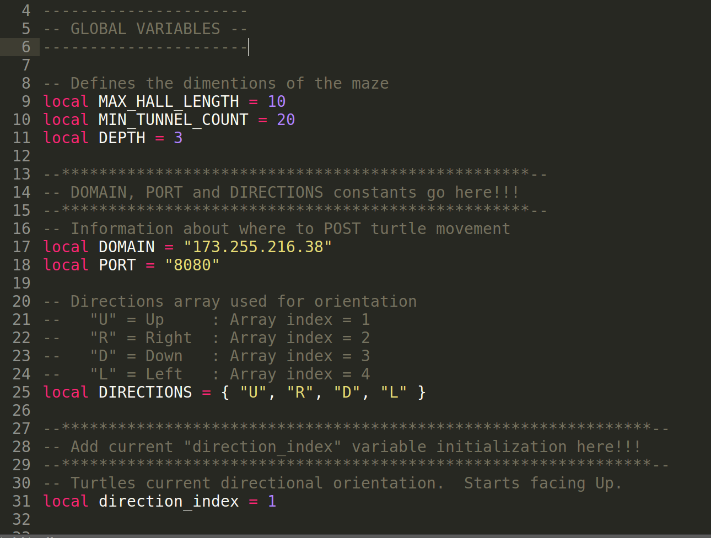
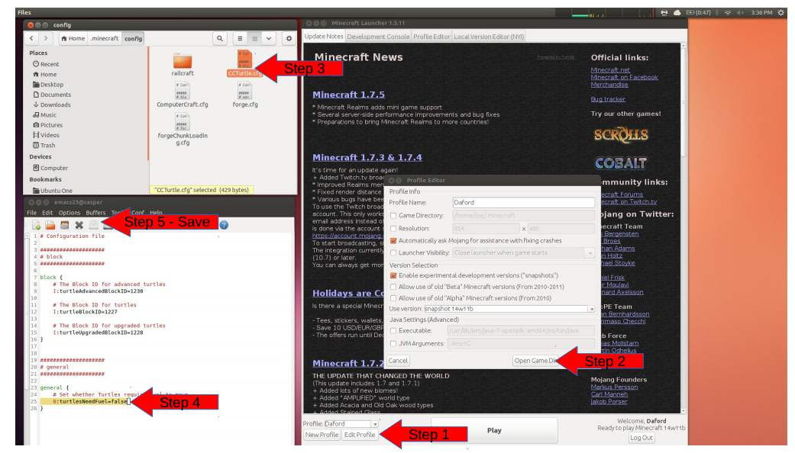
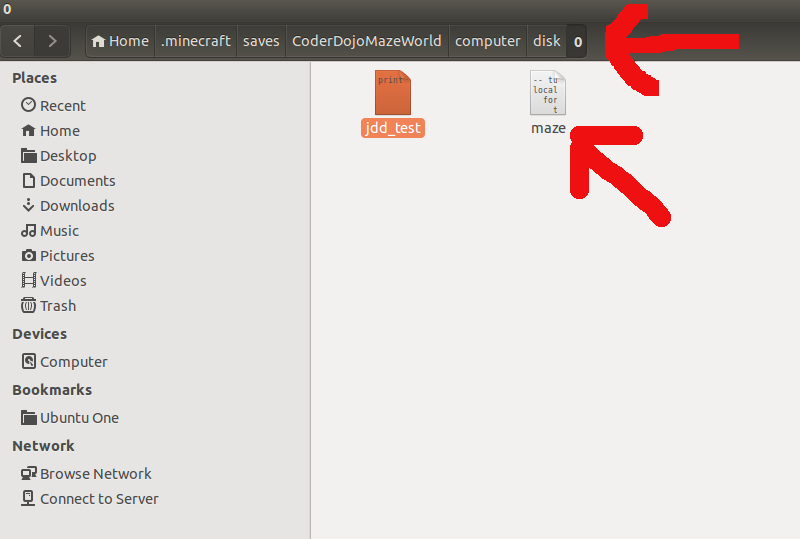

Get the Code!
- Start minecraft with computercraft Mod
- Create disk drive with disk next to a mining turtle
- Use pastebin utility as shown below (pastebin file = zfpTNVf5)
Use Preferred Text Editor
Open Code in an Editor of your choice
- Use editor of choice. For example, I'm using Sublime Text.
- Navigate to the code on the disk outside minecraft, in the game directory, so your edits are updated right away when saved.
Definititions
Broadcasting Turtle Location To The WEB
Broadcasting Protocol == HTTP
Broadcasting Domain == ? (TBD)
Broadcasting Port == 8000
- Protocol: A set of rules used in programming computers so that they can communicate with each other.
- HTTP (HyperText Transfer Protocol): Protocol used for exchanging files on the web. (Note: Your browser is an HTTP client that sends requests to web servers)
- Domain: Address of a computer, organization, or other entity on the Internet.
- Port: Where the computer listens for messages coming in and sends messages going out. Default port for the internet is port 80 or 443 for encrypted content
Global Variables
Add Global Constants for Communication Protocol
- Array - A list of values referenced by an number starting with 1. Note: Most programming languages start counting at 0, not Lua!
- Global Variables - Can be used throughout the program. We are using it to keep track of the directional position of the turtle so we know what direction to move the turtle on the map.

Broadcast
Utility Functions Required for Broadcasting Turtle's Direction
- httpPost function - Uses the existing http api to post the information required to broadcast.
- broadcast function - Broadcasts movement to the internet using httpPost function.
- turnRight function - turns the turtle and keeps track of the turtles direction using the direction_index variable.
Coding Challenge!
Where to call the "broadcast" function?
When you figure it out let me know if you want to test your turtle on my server?
Resources
- My email: joe.dean@gmail.com
- My Twitter: @joeddean
- Code: http://joedean.github.io/computercraft
- Slides: http://joedean.github.io/computercraft/presentations/mazemap.html
Thanks
- on-site.com: @onsitedotcom
Appendix I
Remove the need for Fueling a Turtle

Appendix II
Edit Program Outside of Minecraft

/